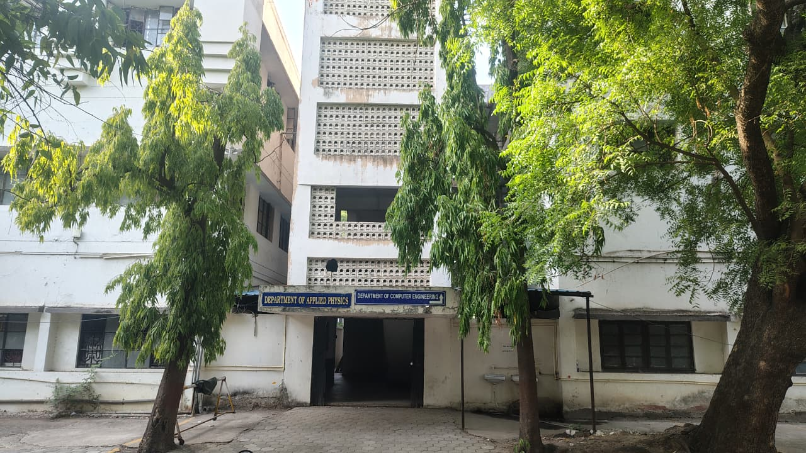

Algorithms, architecture, operating systems, databases and software engineering.
Computer Science & Engineering · SGSITS
Think in systems.
Build with purpose.
Shape what’s next.
A department for rigorous computer science, hands-on engineering, meaningful research and technology that responds to industry and society.
8UG semesters
4PG semesters
28Faculty members

CE
Computer Engineering Department
SGSITS, Indore · Official photograph
</>learn
build
research
build
research
Scroll to explore
Department vision & mission
Computing excellence.
Computing excellence.
Human purpose.
Our vision is to grow as a centre of excellence that develops capable computer science professionals for changing industrial and societal needs.
M1 Combine sound theory with practical computing skills 01
M2 Encourage innovation, research and analytical thinking 02
M3 Build professional ethics and responsibility through quality education 03
M4 Create an industry-connected environment for continuous technological learning 04
M5 Apply computing knowledge to societal and environmental challenges 05
M6 Support lifelong learning and sustainable development 06
PDF Read the official department vision and mission ↗
About the department
Strong foundations.
Strong foundations.
Future-facing computing.
The Department of Computer Engineering at SGSITS develops computing professionals through theory, practical work, research and responsible problem-solving.
Students move from algorithms and systems fundamentals to contemporary areas of software, networks, data and intelligent computing, supported by faculty mentorship and laboratory learning.
Explore academics →Laboratory work, projects and technical communities turn concepts into systems.
Research and engineering shaped by ethics, social needs and sustainable development.
Study computer scienceOne discipline.
One discipline.
Many directions.
Build depth through structured undergraduate, postgraduate and doctoral study, with direct access to semester-wise syllabi and timetables.
01 · 8 SEMESTERS
B.Tech Computer Science & Engineering
An undergraduate pathway from mathematical and programming foundations to complete computing systems.
View syllabus ↗02 · 4 SEMESTERS
M.Tech Computer Engineering
Advanced coursework and research for deeper technical specialisation and professional practice.
View syllabus ↗03 · RESEARCH
Ph.D. & doctoral research
Original research guided by department faculty across contemporary computing domains.
Explore research ↗04 · STUDENT DESK
Curriculum &
class resources
Open semester-wise syllabus, current timetable and the latest academic calendar.
Open resources ↗Department pulseIdeas, events &
View all events →
Ideas, events &
what’s next.
Department
A department where computing moves from theory to working systems
Explore laboratories, technical activities, research work and the people shaping the CSE community.
Explore the department ↗Stay informed
Notice centre
Academic registration and semester commencement informationAcademic · PDF notice↗
Orientation schedule for newly admitted studentsStudent affairs · Schedule↗
Applications invited for institute research supportResearch · Circular↗
Student clubs registration and activity calendarStudent life · Form↗
View all notices
Research & PhD scholars
Questions become
Questions become
working knowledge.
Discover department supervisors, scholars, publications, projects and consultancy across systems, software, networks, data and intelligent computing.
Find a researcher
R / 01AI, data &
Networks, security
Software systems
AI, data &
intelligent systems
Research and projects that turn data into useful, responsible computing systems.
→ R / 02Networks, security
& distributed systems
Resilient connected systems, secure communication and modern infrastructure.
→ R / 03Software systems
& engineering
Methods, tools and architectures for dependable real-world software.
→CSE outcomesFrom the classroom
From the classroom
to professional impact.
Access verified, year-wise placement records published by the department administrator and opened directly in their original sheets.
OFFICIAL RECORDS
Placement sheets,
Placement sheets,
year by year.
Access administrator-verified placement records for each academic session from one clear archive.
View past placements ↗Placement archive
Published sheets will appear here.
The website administrator can add an academic year and a view-only sheet link.
TechnologyEngineeringConsultingAnalyticsResearchPublic sector
Study at SGSITS CSEBring your questions.
Bring your questions.
Build your direction.
Explore B.Tech, M.Tech and doctoral pathways in computing. Admission rules and application timelines remain available through the official SGSITS portal.
Official admissions ↗Department facilitiesSpaces to code.
Spaces to code.
Room to collaborate.
Department learning extends through computing laboratories, project work, seminars and student-led technical activities on the SGSITS campus.
Department of Computer Engineering
SGSITS, Indore
SGSITS, Indore
Find us on campusCampus map.
Campus map.
Your route to CSE.
The Computer Science & Engineering department is located inside the SGSITS campus in central Indore. Use the interactive map for directions to the institute.